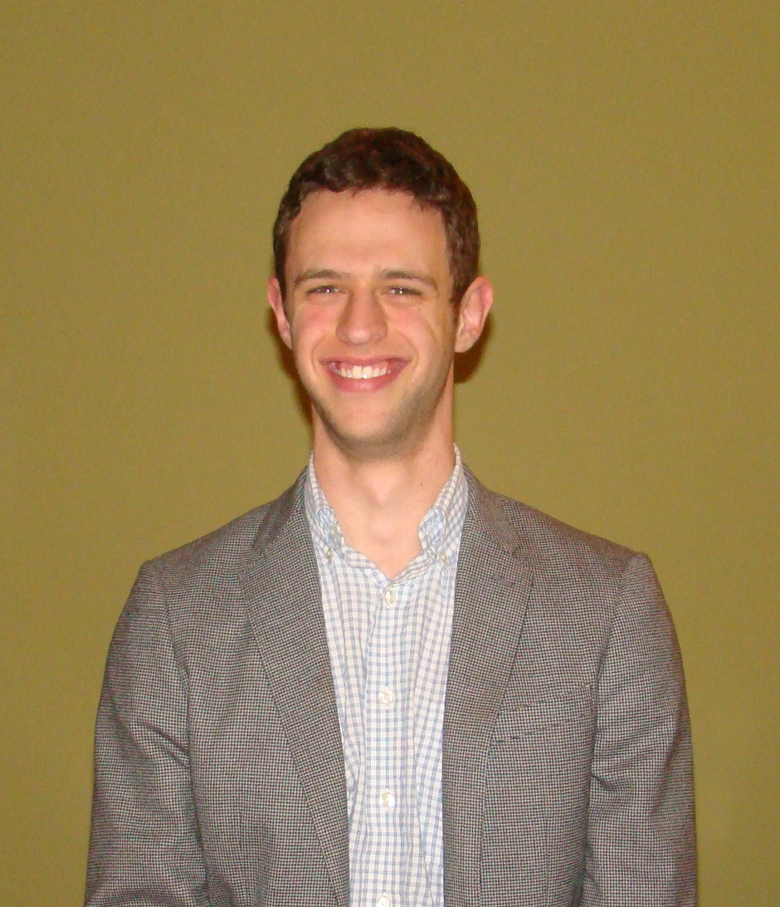

|  | ||
Daniel Irving Bernstein |
||
|
Office: |
E17-481D |
| Email: | dibernst@mit.edu, bernstein.daniel@gmail.com |
|
| Mailstop: | Massachusetts Institute of Technology 77 Massachusetts Avenue Cambridge, MA 02139, USA |
|
I am an NSF Mathematical Sciences Postdoctoral Research Fellow at MIT, where I work in the Institute for Data, Systems, and Society (IDSS) and the Laboratory for Information and Decision Systems (LIDS). My postdoc mentor is Caroline Uhler and my research area is applied algebraic geometry. In Fall 2020, I I was also a Research Associate at Duke. In Spring 2021, I am also the Jerrold E. Marsden Postdoctoral Fellow at the Fields Institute in Toronto during the Thematic Program on Geometric Constraint Systems, Framework Rigidity, and Distance Geometry. I spent Fall 2018 as a postdoc at Brown University in the Institute for Computational and Experimental Research in Mathematics (ICERM) during the semester program on nonlinear algebra. In May 2018, I graduated from North Carolina State University with a PhD in mathematics. My advisor was Seth Sullivant. |
||
| CV |
|
|||
| Papers | ||||
| Virtual seminar | ||||
| Teaching | ||||
| Other |